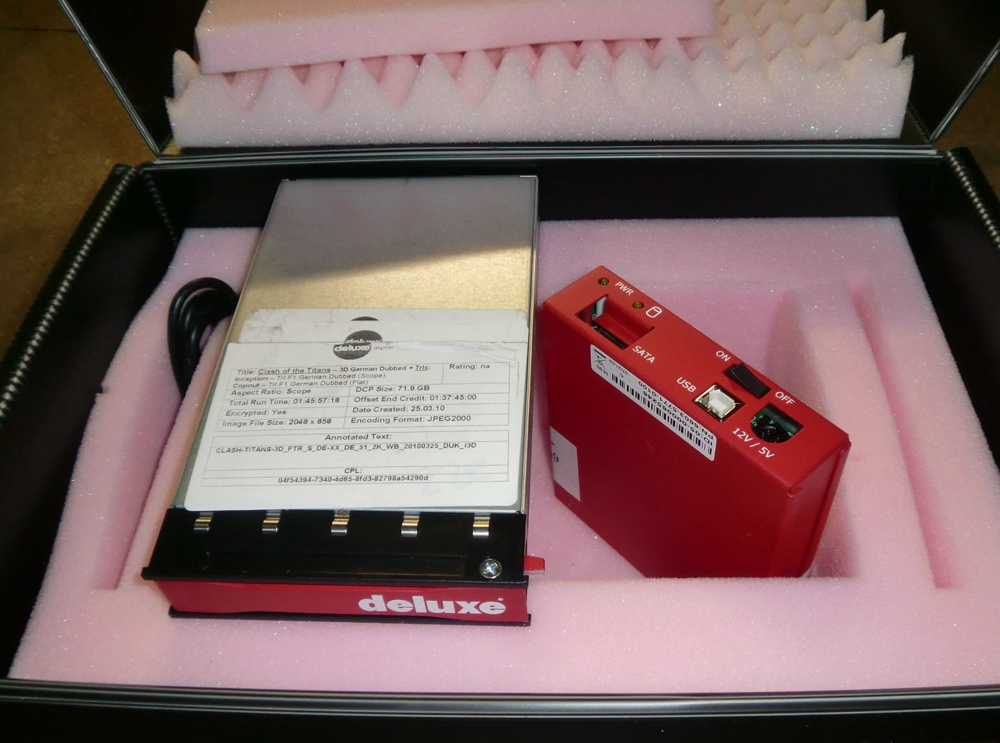

class: center, middle, titlepage ### WED02: *RAWcooked for preservation and DCP creation* --- class: contentpage ### **Agenda** 1. RAWcooked for Preservation > 1.1 RAWcooked commands > 1.2 Logs, errors and warnings > 1.3 Problem solving > 1.4 Patches and snapshots > 1.5 Testing the software > 1.6 BFI workflow overview 2. DCPs 2.1 Introduction to DCPs 2.2 Creating DCPs with DCP-o-matic 2.3 DCP validation with ClairMeta --- class: contentpage ### **1. RAWcooked for preservation** .center[<img src="https://raw.githubusercontent.com/digitensions/summer-school-2024-local/main/wednesday/images/Screenshot 2024-09-05 at 20.18.42.png" width="1000">] - RAWcooked encodes DPX, TIFF and EXR image sequences or AVI into a lossless FFV1 video stream - Any PCM audio supplied with a sequence is converted to a lossless FLAC audio stream - RAWcooked reversibility data ensures bit perfect restoration - All are muxed in a Matroska wrapper by FFmpeg, including sidecar files - Lossless compression reduces sequence sizes by between one and two thirds - FFV1 slice level CRCs for granular file verification - Video files can be integrated into media asset management systems for viewing --- class: contentpage ### **1.1 RAWcooked commands** Help pages: ```sh rawcooked -h man rawcooked ``` Adding license information to your software ```sh --store-license 00608C86C03E74F628B1159A78B9368BA3CFBF5F9DEC81 ``` Show which 'flavours' are available to your new license ```sh --show-license ``` If you purchase a sublicense you can create your own license values ```sh --sublicense <value> ``` And you can set the duration that the license will run for for x months, end date is last day of month ```sh --sublicense-dur 3 ``` --- class: contentpage ### **1.1 RAWcooked commands** The basic RAWcooked command that allows for good preservation practise: ```sh rawcooked --all --no-accept-gaps INPUT -o OUTPUT.mkv &>> OUTPUT.mkv.txt ``` The `--all` contains these RAWcooked commands: ```sh Command | Description -------------------|--------------------------------------------------------------------- --encode/decode | The correct option is selected automatically --info | Prints information about the files --conch | Conformance checks the format supplied --hash | Computes hashes for each DPX or audiovisual file --coherency | Checks coherency of all files in the sequence --check-padding | Looks for non-zero padding in DPX, issue warning if found --check | Runs post-encode checks that file decodes safely --accept-gaps | Forces FFmpeg to encode gaps by creating concatenated list of images ``` Setting a larger attachment size value, default is 1048576 bytes (1MB) ```sh rawcooked --all --no-accept-gaps -s 5242880 INPUT -o OUTPUT.mkv ``` --- class: contentpage ### **1.1 RAWcooked commands** You can tell RAWcooked to answer No or Yes to questions asked during automated encoding by adding to your RAWcooked command ```sh rawcooked --all --no-accept-gaps -n (or) -y -s 5242880 INPUT -o OUTPUT.mkv ``` Create a FrameMD5 of input frames and store as a sidecar file, with and without audio streams, by adding to your RAWcooked command ```sh rawcooked --all --no-accept-gaps -y -s 5242880 INPUT -o OUTPUT.mkv --framemd5 rawcooked --all --no-accept-gaps -y -s 5242880 INPUT -o OUTPUT.mkv --framemd5-an ``` Ask RAWcooked to print the FFmpeg command and not run the encoding using '-d' ```sh rawcooked --all --no-accept-gaps -d -s 5242880 INPUT -o OUTPUT.mkv --framemd5 ``` <font color="orange">Practise:</font> Try printing an FFmpeg command output for your dpx sample --- class: contentpage ### **1.2 Logs, errors and warnings** .left[<img src="https://raw.githubusercontent.com/digitensions/summer-school-2024-local/main/wednesday/images/Screenshot 2024-09-11 at 17.42.30.png" width="700">] Why capturing logs is important: - They give you clear feedback about encoding successes and failures - RAWcooked warnings and errors inform you of problems you may encounter with supplied files - Important encoding detail from FFmpeg is captured with DPX to MKV stream mapping and metadata - Versions of the software being used is captured for long-term event tracking - Capturing them efficiently is the key to automating steps in your workflow - Log reversibility confirmation is critical for moving to the next stage of a workflow - Future RAWcooked developments may rely on preserved logs for encoding detail --- class: contentpage ### **1.2 Logs, errors and warnings** Logs start with RAWcooked analysis of the DPX sequence: .left[<img src="https://raw.githubusercontent.com/digitensions/summer-school-2024-local/main/wednesday/images/Screenshot 2024-09-11 at 17.41.08.png" width="400">] --- class: contentpage ### **1.2 Logs, errors and warnings** Then they confirm contents of the package for encoding, and the FFmpeg process starts: .left[<img src="https://raw.githubusercontent.com/digitensions/summer-school-2024-local/main/wednesday/images/Screenshot 2024-09-11 at 17.41.41.png" width="1000">] --- class: contentpage ### **1.2 Logs, errors and warnings** FFmpeg confirms the input file path, duration, stream metadata and how it will map to the FFV1 .left[<img src="https://raw.githubusercontent.com/digitensions/summer-school-2024-local/main/wednesday/images/Screenshot 2024-09-11 at 17.42.13.png" width="800">] --- class: contentpage ### **1.2 Logs, errors and warnings** The frame encoding indicates frame being encoded, the encoding FPS, size, bitrate and speed. When FFmpeg completes the RAWcooked post-encoding analysis begins which confirms the FFV1 is a bit perfect copy .left[<img src="https://raw.githubusercontent.com/digitensions/summer-school-2024-local/main/wednesday/images/Screenshot 2024-09-11 at 17.42.30.png" width="800">] --- class: contentpage ### **1.2 Logs, errors and warnings** When analysis completes logs confirms the version type, that hashes are present and that the file is reversible .left[<img src="https://raw.githubusercontent.com/digitensions/summer-school-2024-local/main/wednesday/images/Screenshot 2024-09-11 at 17.42.38.png" width="800">] Spellings can sometimes change between version releases. 'Reversability' later became 'Reversibility'. --- class: contentpage ### **1.2 Logs, errors and warnings** Errors raised by RAWcooked generally stop encoding from continuing: .left[<img src="https://raw.githubusercontent.com/digitensions/summer-school-2024-local/main/wednesday/images/Screenshot 2024-09-11 at 17.19.10.png" width="800">] .left[<img src="https://raw.githubusercontent.com/digitensions/summer-school-2024-local/main/wednesday/images/Screenshot 2024-09-11 at 17.14.25.png" width="600">] --- class: contentpage ### **1.2 Logs, errors and warnings** But not when they're in the FFmpeg encoding logs: .left[<img src="https://raw.githubusercontent.com/digitensions/summer-school-2024-local/main/wednesday/images/Screenshot 2024-09-11 at 17.12.19.png" width="800">] --- class: contentpage ### **1.2 Logs, errors and warnings** Warning messages don't stop encoding, but serve to let you know something isn't ideal in your sequence .left[<img src="https://raw.githubusercontent.com/digitensions/summer-school-2024-local/main/wednesday/images/Screenshot 2024-09-11 at 17.24.10.png" width="900">] --- class: contentpage ### **1.2 Logs, errors and warnings** Sometimes you get errors and warnings. The warnings again advisory but the errors ultimately prevent encoding .left[<img src="https://raw.githubusercontent.com/digitensions/summer-school-2024-local/main/wednesday/images/Screenshot 2024-09-11 at 17.21.42.png" width="900">] --- class: contentpage ### **1.3 Problem solving** - Missing DPX in sequence .left[<img src="https://raw.githubusercontent.com/digitensions/summer-school-2024-local/main/wednesday/images/Screenshot 2024-09-11 at 20.50.44.png" width="600">] ```sh --accept-gaps ``` --- class: contentpage ### **1.3 Problem solving** - Framerate irregularities .left[<img src="https://raw.githubusercontent.com/digitensions/summer-school-2024-local/main/wednesday/images/Screenshot 2024-09-11 at 20.54.10.png" width="600">] ```sh -framerate 24 ``` --- class: contentpage ### **1.3 Problem solving** - Out of memory kills .left[<img src="https://raw.githubusercontent.com/digitensions/summer-school-2024-local/main/wednesday/images/Screenshot 2024-09-11 at 20.56.11.png" width="700">] --- class: contentpage ### **1.3 Problem solving** - Non-zero padding .left[<img src="https://raw.githubusercontent.com/digitensions/summer-school-2024-local/main/wednesday/images/Screenshot 2024-09-11 at 21.00.08.png" width="600">] ```sh --output-version 2 ``` --- class: contentpage ### **1.3 Problem solving** - FFV1 slice count miscalculations .left[<img src="https://raw.githubusercontent.com/digitensions/summer-school-2024-local/main/wednesday/images/Screenshot 2024-09-11 at 20.01.09.png" width="700">] --- class: contentpage ### **1.3 Problem solving** - Extra image element .left[<img src="https://raw.githubusercontent.com/digitensions/summer-school-2024-local/main/wednesday/images/Screenshot 2024-09-11 at 20.04.26.png" width="700">] --- class: contentpage ### **1.3 Problem solving** Copy error or warning messages and search in the RAWcooked issue tracker .left[<img src="https://raw.githubusercontent.com/digitensions/summer-school-2024-local/main/wednesday/images/Screenshot 2024-09-11 at 19.29.56.png" width="900">] --- class: contentpage ### **1.3 Problem solving** If your issue isn't listed you'll want to compile some details like capturing the FFmpeg command using `-d` flag. This command also creates the reversibilty data: ```sh ffmpeg -xerror -r 24.000000 -r 24.000000 -f concat -safe 0 -c:v dpx -i "dpx.rawcooked_reversibility_data.0.FileList.txt" -c:a flac -c:v ffv1 -coder 1 -context 1 -f matroska -g 1 -level 3 -slicecrc 1 -slices 64 -attach "dpx.rawcooked_reversibility_data" -metadata:s:1 mimetype=application/octet-stream -metadata:s:1 "filename=RAWcooked reversibility data" -f matroska "OUTPUT.mkv" ``` Capture the exit status of the RAWcooked command after failure to pass on in your issue: ```sh echo $? ``` Trim the first 1MB of a DPX file to send to RAWcooked developers for analysis: ```sh head -c 1048576 file.dpx > header_dump.dpx ``` Compile these details and you can contact the RAWcooked team to raise your issue. --- class: contentpage ### **1.4 Patches and snapshots** If you find a bug or need a patch to fix DPX metadata then you might get sent a snapshot version to test: .left[<img src="https://raw.githubusercontent.com/digitensions/summer-school-2024-local/main/wednesday/images/Screenshot 2024-09-11 at 23.12.04.png" width="800">] --- class: contentpage ### **1.5 Testing the software** <font color="orange">Create safe environments for testing, away from your preservation workflows using copies of DPX preservation sequences not the real thing.</font> Reversibility testing a few sequences when RAWcooked or FFmpeg software is updated: - RAWcook a test DPX sequence with `--all`, then use `--all` to unwrap it again creating a duplicate DPX sequence - Create whole file MD5 checksum manifests of the original sequence and the unwrapped DPX sequences - Compare the first and second manifests to ensure they're identical ```sh find original_dpx/ -name '*.dpx' -exec md5sum {} \; | sort > original_dpx_md5s.txt find duplicate_dpx/ -name '*.dpx' -exec md5sum {} \; | sort > duplicate_dpx_md5s.txt diff -s original_dpx_md5s.txt duplicate_dpx_md5s.txt ``` <font color="orange">Practise:</font> Using your FFV1 Matroska create a duplicate DPX sequence, make MD5 manifests for both and compare the two manifests to ensure they are identical. --- class: contentpage ### **1.5 Testing the software** You can use the SMPTE DPX documentation, and a hex editor, to interrogate your DPX file at a granular level. Looking at your offset figure for the image filename, 36: .left[<img src="https://raw.githubusercontent.com/digitensions/summer-school-2024-local/main/wednesday/images/Screenshot 2024-09-11 at 22.40.43.png" width="800">] --- class: contentpage ### **1.5 Testing the software** You can match this to the binary data in a hex editor, using the 36 from the offset column to find where the data is exactly located in the DPX: .left[<img src="https://raw.githubusercontent.com/digitensions/summer-school-2024-local/main/wednesday/images/Screenshot 2024-09-11 at 22.49.59.png" width="800">] --- class: contentpage ### **1.5 Testing the software** <font color="orange">Practise:</font> Use a hex editor to edit some of the image data in a copy of your RAWcooked FFV1 Matroska file then run the `--check` function against the file to see if it notices the break between the FFV1 CRC and the CRC stored in the reversibility data. ```sh rawcooked --check hacked_encoding.mkv ``` .left[<img src="https://raw.githubusercontent.com/digitensions/summer-school-2024-local/main/wednesday/images/Screenshot 2024-09-16 at 22.34.31.png" width="950">] --- class: contentpage ### **1.6 BFI workflow overview** .left[<img src="https://raw.githubusercontent.com/digitensions/summer-school-2024-local/main/wednesday/images/Screenshot 2024-09-05 at 21.15.39.png" width="950">] BFI workflows use Bash shell scripts, MediaConch and MediaInfo for validation of DPX and Matroskas. The open source [DPX workflow scripts](https://github.com/bfidatadigipres/dpx_encoding) can be viewed in full on the BFI GitHub. --- class: contentpage ### **1.6 BFI workflow overview** Shell script that iterates through subfolders in PATH checking each first DPX against a mediaconch policy ```sh #!/bin/bash -x DPATH="/path_to_folder/dpx_to_cook/" POLICY="path_to_dpx_mediaconch_policy" TAR_LIST="/path_to_tar_list/" RAWCOOK_LIST="/path_to_rawcook_list/" find "${PATH}" -maxdepth 1 -mindepth 1 -type d -mmin +30 | while IFS= read -r fdr; do # Find first DPX of sequence dpx=$(ls "$folder" | head -1) # Check first DPX against DPX policy check=$(mediaconch -p "$POLICY" "${DPATH}/${fdr}/${dpx}" | grep "pass! ${DPATH}/${fdr}/${dpx}") if [ -z "$check" ] then # DPX failed policy, file for TAR wrap echo "${DPATH}/${folder}" >> "$TAR_LIST" else # DPX passed policy, file for RAWcook echo "${DPATH}/${folder}" >> "$RAWCOOK_LIST" fi done ``` --- class: contentpage ### **1.6 BFI workflow overview** Placing move commands within loops can be problematic, regularly failing. The lists of successful and failed Mediaconch passes are used here to move the sequences in batches to their new folders for processing. ```sh RAWCOOK_PATH="/path_to_folder/rawcook/" TAR_PATH="/path_to_folder/tar_preservation/" # Move files outside of while loop grep "/mnt/" "${RAWCOOK_LIST}" | parallel --jobs 3 mv "{}" "${RAWCOOK_PATH}" grep "/mnt/" "${TAR_LIST}" | parallel --jobs 3 mv "{}" "${TAR_PATH}" # Refresh lists echo "" > "${RAWCOOK_LIST}" echo "" > "${TAR_LIST}" ``` DPX sequences that do not match MediaConch policy requirements are TAR wrapped. Our RAWcooked license requirements include: - RGB Bitdepth is 8-bit LE / 10-bit BE or LE / 12-bit BE / 16-bit BE or LE - Y Luma is 10-bit BE / 16-bit BE - No alpha channels are present, RGBA, RGB/A --- class: contentpage ### **1.6 BFI workflow overview** ```sh #!/bin/bash -x RPATH="/path_to_folder/rawcook/" MPATH="path_to_folder/mkv_cooked/" TAR_LIST="/path_to_tar_list/" RAWCOOK_LIST="/path_to_rawcook_list/" # Ensure looping RAWcooked encoding doesn't process file already running find "${RPATH}" -maxdepth 1 -mindepth 1 -type d -name "N_*" | while IFS= read -r folders; do folder_clean=$(basename "$folders") encoding=$(grep -c "$folder_clean" "${MPATH}encoding.log") if [ "$encoding" -eq 0 ] then echo "$folder_clean" >> "${RPATH}list.txt" else echo "File already encoding." fi done ``` Use the `list.txt` to begin parallel encoding of DPX sequences ```sh grep ^N "${RPATH}list.txt" | parallel --jobs 3 "rawcooked -y --all --no-accept-gaps ${RPATH}{} -o ${MPATH}{}.mkv &>> ${MPATH}{}.mkv.txt" ``` --- class: contentpage ### **1.6 BFI workflow overview** .left[<img src="https://raw.githubusercontent.com/digitensions/summer-school-2024-local/main/wednesday/images/Screenshot 2024-09-05 at 22.46.28.png" width="500">] This phrase is key to identifying a success RAWcooked encoding: ``` Reversibility was checked, no issues detected. ``` --- class: contentpage ### **1.6 BFI workflow overview** The post encoding check script searches within the mkv_cooked/ path for log files that completed over 30 minutes ago: ```sh #!/bin/bash -x MPATH="path_to_folder/mkv_cooked/" find "${MPATH}" -name "*.mkv.txt" -mmin +30 | while IFS= read -r fname; do success_check=$(grep 'Reversibility was checked, no issue detected.' "$fname") # Fetch MKV file name by cutting '.txt' from end of path mkv_filename=$(basename "$fname" | rev | cut -c 5- | rev ) # Fetch DPX folder name by cutting '.mkv.txt' from end of path dpx_success_path=$(echo "$fname" | rev | cut -c 9- | rev ) if [ -z "$success_check" ]; then log "SKIP: Matroska $mkv_filename has not completed, or has errors detected" else echo "$dpx_success_path" >> "${MPATH}rawcooked_success.log" echo "$mkv_filename" >> "${MPATH}successful_mkv_list.txt" fi done ``` The `rawcooked_success.log` tracks complete encodings and `successful_mkv_list.txt` is used to move MKVs to MediaConch check and if pass, on to the `check` folder --- class: contentpage ### **1.6 BFI workflow overview** Build a list of all MKV in the `check` folder then run the `rawcooked --check` command ```sh #!/bin/bash -x CPATH="path_to_folder/check/" find "$MPATH" -name '*.mkv' -mmin +30 | sort > "${MPATH}mkv_list.txt" grep ^N "${MPATH}mkv_list.txt" | parallel --jobs 5 "rawcooked --check ${MPATH}{} &>> ${MPATH}{}.txt" ``` ```sh # Search for .txt files for success message grep '/mnt/' "${MKV_PATH}mkv_list.txt" | while IFS= read -r log_list; do success_check=$(grep 'Reversibility was checked, no issue detected.' "${log_list}.txt") mkv_file=$(basename "$log_list") dpx_seq=$(echo "$mkv_file" | rev | cut -c 5- | rev ) if [ -z "$success_check" ]; then echo "FAILED: Matroska $mkv_file has errors detected." echo "$mkv_file" >> "${MKV_PATH}failure_mkv_list.txt" else echo "PASSED: RAWcooked MKV $mkv_file passed --check successfully and will be moved to DPI ingest" echo "$dpx_seq" >> "${DPX_PATH}dpx_deletion_list.txt" echo "$mkv_file" >> "${MKV_PATH}successful_mkv_list.txt" fi done ``` --- class: contentpage ### **2. DCPs** .left[] --- class: contentpage ### **2.1 Introduction to DCPs** DCPs aka Digital Cinema Packages were the standardised replacement to analogue film projection, introduced circa 2010. JPEG-2000 and WAV components in an MXF wrapper, with an emphasis on playback security (due to piracy concerns). 2K (common) or 4K (rare) resolution, with a limited range of frame rates. --- class: contentpage ### **2.1 Introduction to DCPs** Interesting sidenote, `Film Curatorship (Usai, Francis, Horwath, Loebenstein)` from 2008 posits a likely arms-race on resolution necessitating constant format upgrades, and making stable formats for archives difficult to collect. *This did not happen*, likely due to the effort required to physically update the digital projectors, and no motivations equivalent to the physical/digital changeover. We now live in a world where some people watch 8K television in their homes on a screen this big, but also pay 20 bucks to watch 2K projected on a screen this big. Crazy. --- class: contentpage ### **2.1 Introduction to DCPs** If we want to disseminate our media to be projected in a cinema context, we will need the ability to create our own DCPs. Today we will look at two tools, DCP-o-matic to create the distributable package and ClairMeta to validate our package. --- class: contentpage ### **2.2 Creating DCPs with DCP-o-matic** DCP-o-matic has a nice graphical application, but today we are going to stay with the command line version. Why? Because if you can use the command line version, you can automate creation - for example, make DCPs of these forty projects, or even make a DCP by default for every film scan. --- class: contentpage ### **2.2 Creating DCPs with DCP-o-matic** Check DCP-o-matic is installed ```sh dcpomatic2_create -v ``` Creating a DCP has two stages, "create" only creates the recipe for what we are requesting. ```sh dcpomatic2_create -o test_dcp --container-ratio 185 -c SHR -n "Test DCP" ~/Desktop/summer-school-2024/media/dpx/ ``` This is expressed as a `metadata.xml` document. ```sh cat metadata.xml ``` --- class: contentpage ### **2.2 Creating DCPs with DCP-o-matic** Some notes on what the creation options used here are: `-o test_dcp` this is the directory where the DCP will be created. `--container-ratio 185` this is our aspect ratio. `-c SHR` SHR is the code for "short". There is also FTR (feature), TLR (trailer) and others. `-n "Test DCP"` this is the title of our DCP. `~/Desktop/summer-school-2024/media/dpx/` this is where the source media can be found. As should now be a common pattern, all other options can be found using "--help" ```sh dcpomatic2_create --help ``` --- class: contentpage ### **2.2 Creating DCPs with DCP-o-matic** We action the action creation of the DCP using the following command. ```sh dcpomatic2_cli test_dcp ``` This will think for a short time (question time!), and then we can have a look at the resulting files. --- class: contentpage ### **2.2 Creating DCPs with DCP-o-matic** Under our test_dcp folder we should now see a folder like `TestDcp_SHR-1_F-178_XX-XX_MOS_2K_20240914_SMPTE_OV`. Good guide to the mysterious world of DCP naming conventions: https://registry-page.isdcf.com/illustratedguide/ This is our DCP! You can put this on a hard drive and send to your local cinema. I love the fact that there is also a `cover_sheet.txt` autogenerated, which contains the technical information required for the projectionist. --- class: contentpage ### **2.2 Creating DCPs with DCP-o-matic** Before we send it out, though, we would want to validate it, to make sure there are no issues with the files. --- class: contentpage ### **2.3 DCP validation with ClairMeta** ClairMeta is an open-source tool to check DCPs are valid, which can be used as an external Python library. ```python import pathlib from clairmeta import DCP dcp = DCP(pathlib.Path.cwd() / 'test_dcp' / 'TestDcp_SHR-1_F-178_XX-XX_MOS_2K_20240914_SMPTE_OV') dcp.parse() status, report = dcp.check() ``` This will deliver a report, with a headline status of either "Success" or "Failure". We can experiment with forcing a failure. --- class: contentpage ### **2.3 DCP validation with ClairMeta** Combining tools like Python and ClairMeta can become really powerful, for example, say you have 500 DCPs in your collection, and you want to validate them all. Manual verification would be tedious, and take a great deal of time, but with these tools this becomes much easier. We will explore this concept in more detail tomorrow.